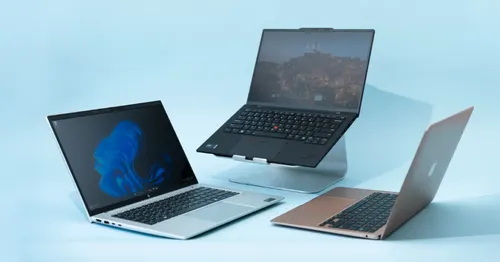
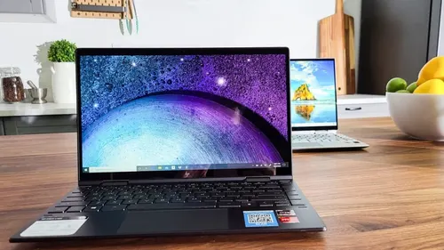

Laptop Complete Information
not found 

Laptop is a computer with a screen, keyboard, and a mouse that can be used for work, play, or study.
Laptop Specification
VIDEO
When choosing a laptop for development or heavy Multitasking, following specifications are important to consider
the following specifications
Processor RAM Storage Graphics Card
Processor
also called as CPU,Aim for at leasst 10-core or 12-core chips tonhandle concurrent backend and frontend tasks
Intel Core Ultra Series 3
Intel Core i9-13900K Intel Core i7-13700K Intel Core i5-13700K Intel Core i3-13700K
Intel Core
Ultra Official Website
AMD Ryzen AI 400 Series
AMD Ryzen 9 7950X AMD Ryzen 9 7900X AMD Ryzen 5 7600X AMD Ryzen 3 7400X
AMD Ryzen AI Official Website
Apple M5 / M5 Pro Apple Official Website
Qualcomm Snapdragon X2 Elite
Qualcomm Snapdragon 8 Gen 3 Qualcomm Snapdragon 8 Gen 2 Qualcomm Snapdragon 8 Gen 1
Qualcomm Snapdragon Official Website
Ram:
16GB of RAM is the minimum for smooth performance, but 32GB or more is ideal for heavy multitasking and running
multiple applications simultaneously.
DDR5(Standard SODIMM)
LPDDR5X-6400 LPDDR5X-5200 LPDDR5X-4266
officaila website
DDR5(Standard SODIMM)
DDR5-4800 DDR5-4400 DDR5-4000
official website
LPDDR6 (Next-Gen Mobile RAM)
LPDDR6-6400 LPDDR6-5200 LPDDR6-4266
official website
Storage: At least 1TB of storage is required for development, but 2TB or more is recommended for heavy multitasking and
running multiple applications simultaneously.
SSDNVMe PCIe Gen 5 SSD
Samsung 990 EVO Samsung 990 Pro WD Black SN850X Seagate FireCuda 530
officaila website
NVMe PCIe Gen 4 SSD
Samsung 980 Pro WD Black SN750 Seagate FireCuda 520
official
website
UFS 4.0 / 5.0 (Embedded Storage)
Samsung UFS 4.0
SK Hynix UFS 4.0
Micron UFS 4.0
official
website
Graphics Card:
At least a graphics card with 8GB of VRAM is required for development, but 16GB or more is recommended for heavy
multitasking and running multiple applications simultaneously.
`
Processor Details RAM Details Storage Details Graphics Card Details